Witness the beauty of
WILPATTU NATIONAL PARK
Scroll| Location | - | Approximately 188 kms away from capital Colombo |
|---|---|---|
| Entrance Gate | - | Hunuwilgama Enterance (Main Gate) |
| Park visiting hours | - | 6 AM to 6 PM |
| Mode of safaris | - | Only Jeep safaris |
| Best time of the day to visit the park | - | 6 AM to 10 AM and 3 PM to 6 PM |
| Type of animals in the park | - | Leopards, Elephants, Bears, Deer, Crocodiles, Reptiles and many verities of birds |
| Closest town to the park entrance | - | Nochchiyagama, Puttalam and Anuradhapura |
| Best months to visit the park | - | Throughout the year. But February to October is the prime time |
| How to come | - | Hired private car or van |
HOW TO REACH WILPATTU NATIONAL PARK
Wilpattu is located 30 kms north of Puttalam, approximately 190 kms from Colombo. Wilpattu National Park extends from the northwest coast towards inland ancient capital city of Anuradhapura which is about 50 km to the east of the Park, covering 425 sq miles approximately. The route from Colombo is via Negombo, Chilaw, Palaviya and Puttalam, The Park office and the main entrance where one can obtain a ticket and enter the park is at Hunuwilgama, 7 km from the turn-off from Puttalam - Anuradhapura road.
Map of Wilpattu National Park
Nestled in the northwest of Sri Lanka, Wilpattu National Park unfolds its diverse landscapes and captivating wildlife. At the park's westernmost point, Kudiramalai Point commands attention with panoramic vistas of the Indian Ocean, creating a mesmerizing backdrop for visitors. As the dry season descends, the Minneriya Tank takes center stage, transforming into a crucial watering hole that draws a multitude of wildlife. Against the canvas of verdant vegetation, this reservoir becomes a living spectacle, where elephants and deer gracefully navigate their surroundings, and a myriad of bird species find refuge.
Delving further into Wilpattu's allure, the park's signature freshwater lakes, or villus, emerge as vital ecosystems. These natural havens provide sustenance for a diverse array of wildlife, offering observers a chance to witness the intricate dance of nature. The elusive inhabitants of Kokmote Thanthirimale, hidden within dense forests, add an element of mystery to the park. Here, leopards and sloth bears find sanctuary, navigating the thick vegetation with a stealth that underscores their elusive nature.
Moving towards the coastal fringes, Marichchukaddi Beach extends the park's embrace to the shoreline. Beyond its scenic beauty, this stretch assumes significance as a nesting site for marine turtles, adding a marine dimension to Wilpattu's rich biodiversity. Lastly, Pomparippu unveils a historical facet, with ancient ruins dating back to the prehistoric era.
 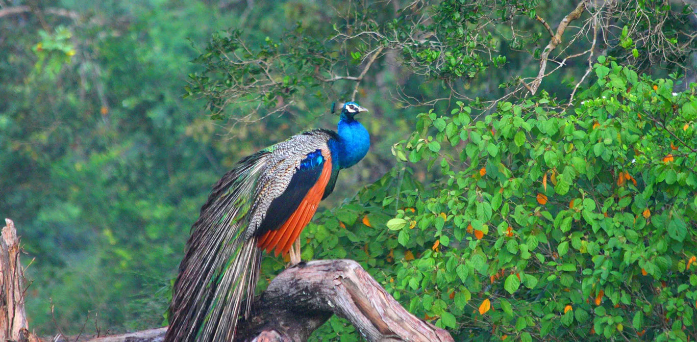
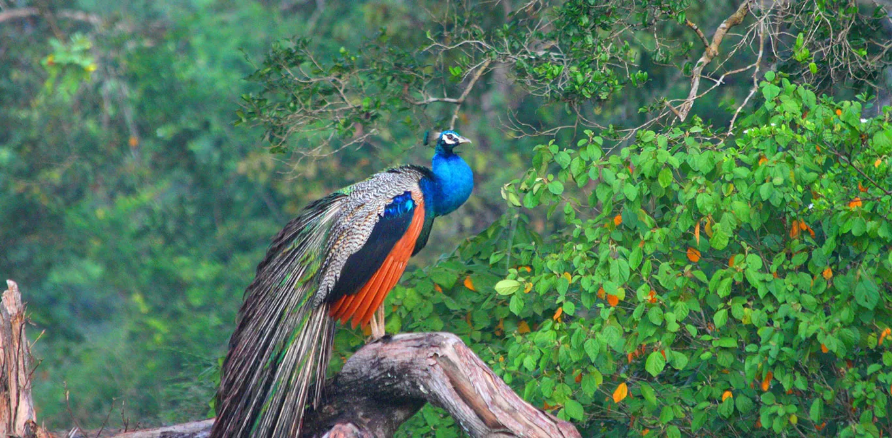

 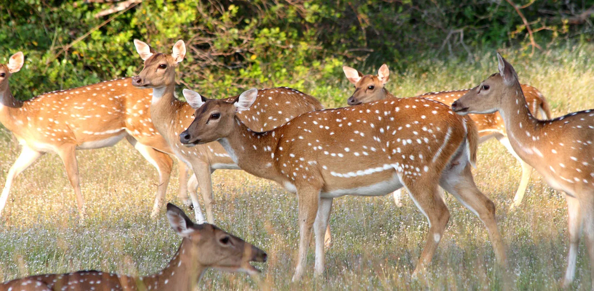
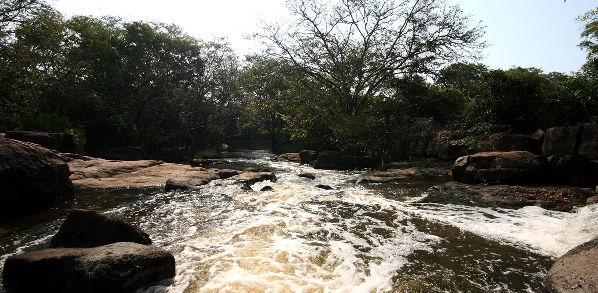
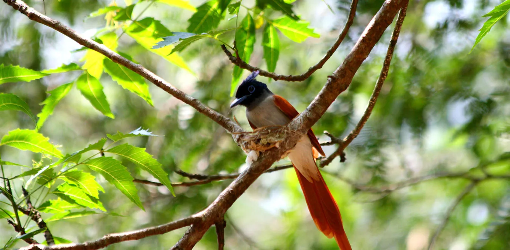
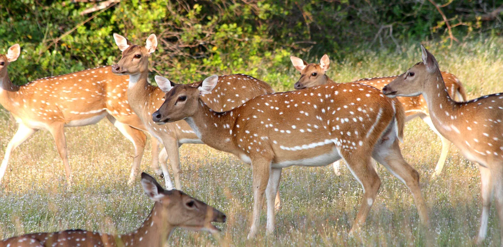
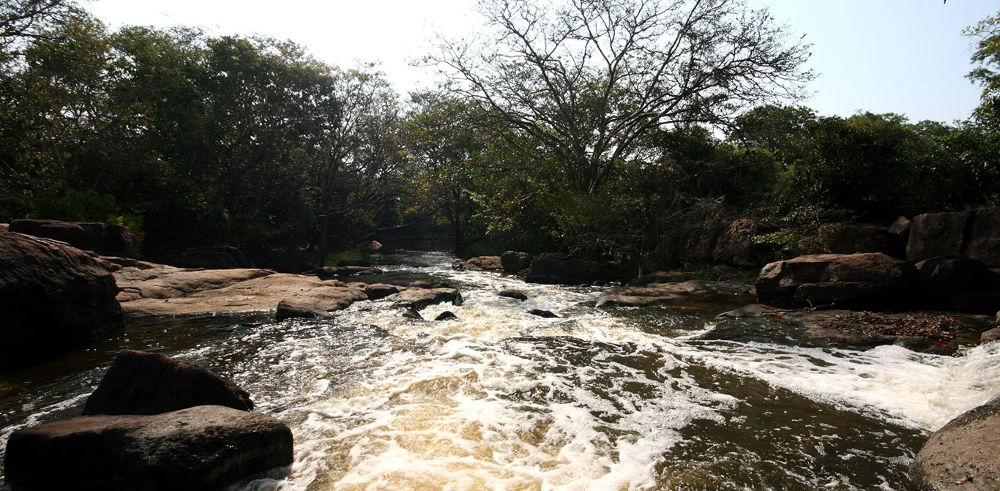
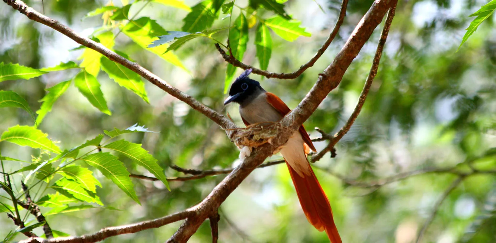

 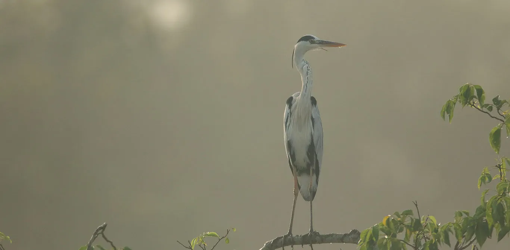
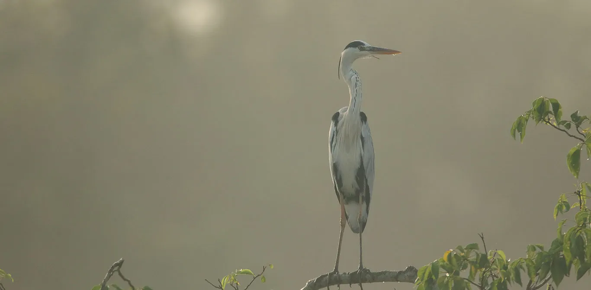
 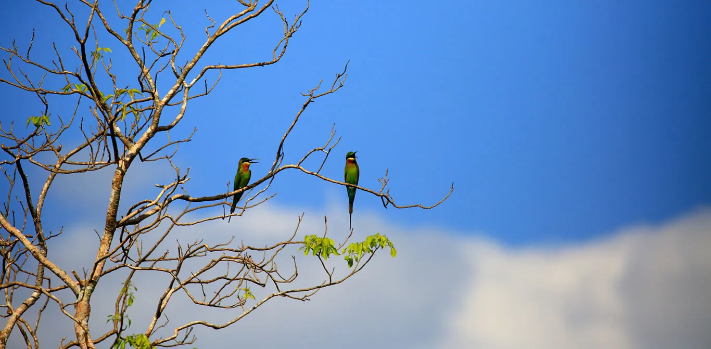
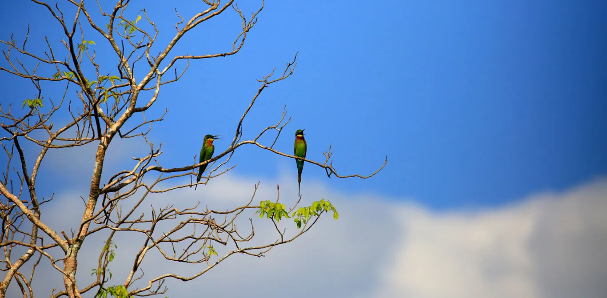